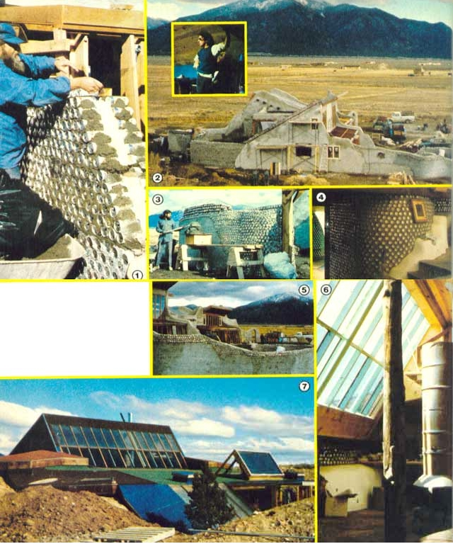

STEVE WINSTON/MIKE REYNOLDS
[1] Gobel’s house is being constructed of double layers of aluminum cans. [2] An aerial view shows the west side of the building. INSET: New Mexico architect Mike Reynolds. [3] The lightweight containers involved in can construction lend themselves to easy working. [4] Reynolds builds walls of bottles and cans… with bottoms exposed for a decorative effect. [5] The Gobel construction has already made use of some 125,000 containers. [6] and [7] A unique fireplace is used as backup heating system… for the tire house’s two large solar collectors.